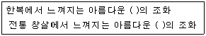
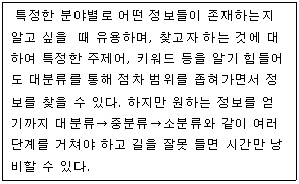
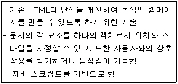
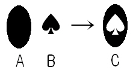

웹디자인기능사 (2005-04-03 기출문제)
1과목: 디자인 일반
1. 다음의 ( )안에 공통적으로 가장 적합한 단어는 ?

- 점
- 선
- 면
- 입체
(정답률: 90%)

2. 다음 중 명도에 관한 설명으로 틀린 것은 ?
- 명도는 V로 표시한다.
- 명도는 색의 밝고 어두운 정도를 말한다.
- 흑색과 백색은 이상적인 완전한 색을 뜻하나, 현실적으로 얻을 수는 없다.
- 명도는 무채색에만 있다.
(정답률: 75%)
3. 다음 중 오스트발트 표색계의 설명이 아닌 것은 ?
- W+B+C=100％
- 색상을 hue로, 명도를 value로, 채도를 chroma로 표시하고 있다.
- 유채색은 색상기호, 백색량, 흑색량 순서로 표시한다.
- 헤링의 4원색설을 기본으로 하였다.
(정답률: 51%)
4. 다음 중 먼셀 표색계에 관한 설명 중 틀린 것은 ?
- 먼셀의 색채체계는 색상, 명도, 채도의 3속성을 근거로하여 작성 되었다.
- 채도 단계는 무채색을 0으로 하고, 그 최고가 14단계 이다.
- 명도 단계는 검정색을 10으로 하고, 흰색을 0으로 하여 모두 11단계이다.
- 색상은 5주요 색상인 빨강, 노랑, 녹색, 파랑, 보라이다.
(정답률: 66%)
5. 단순한(simple) 디자인의 장점이 아닌 것은 ?
- 장식성
- 접근 용이성
- 인식성
- 사용성
(정답률: 79%)
6. 같은 크기의 형을 상, 하로 겹칠 때 위쪽의 것이 크게 보이는 착시현상은 ?
- 각도와 방향의 착시
- 수직수평의 착시
- 바탕과 도형의 착시
- 상방거리과대 착시
(정답률: 67%)
7. 디자인 개념에 대한 설명으로 틀린 것은 ?
- 디자인은 미지의 세계로부터 새로운 가치를 추구하는 것이다.
- 디자인은 커뮤니케이션의 수단이다.
- 디자인은 인간의 무의식적인 노력으로서, 그 결과는 실체로서 구체화되지 않을 수 있다.
- 디자인은 고도로 복잡하고 세련된 숙련이다.
(정답률: 68%)
8. 비례의 종류로 맞게 짝지어진 것은 ?
- 상가 수열비와 황금비, 정수비, 등비 수열비
- 황금비 직사각형, 등가 수열비, 등수 수열비
- 황금비, 등차 수열비, 피타고라스 정수비
- 루트 직사각형, 피타고라스 정수비, 등가 수열비
(정답률: 61%)
9. 관용색명의 특징으로 볼 수 없는 것은 ?
- 시대나 유행에 따라서 다소 변하기도 하므로 정확한 색의 전달이 어렵다.
- 무수히 많은 색이름과 그 어원을 가지고 있어서 한꺼번에 습득하기가 어렵다.
- 어느 특정한 색을 여러 가지 언어로 표현하고 있기 때문에 복잡하고 혼동하기 쉽다.
- 몇 가지의 기본적인 색 이름에 수식어, 색상의 형용사를 덧붙혀서 부른다.
(정답률: 68%)
10. 다음의 디자인 원리 중 율동(rhythm)에 포함되지 않는 것은 ?
- 방사(radiation)
- 점이(gradation)
- 반복(repetition)
- 대칭(symmetry)
(정답률: 71%)
11. 다음 중 좋은 레이아웃에 해당하지 않는 것은 ?
- 메시지를 분명하게 전달할 수 있도록 정보를 배열하고 강조해야 한다.
- 독자가 반드시 읽어야 할 것과 첫 번째로 읽어야 할 것을 선택해야 한다.
- 활자는 중요도나 내용에 관계없이 굵고 다양해야 잘 읽을 수 있다. 따라서 여러 가지 서체와 색상을 사용하고, 활자의 굵기를 다양하게 하여 표현한다.
- 글자의 시작이 어디에서 되는지, 어디에 있어야 하는지를 정하고 다른 것보다 두드러지게 어떻게 만들 것인가를 생각해야 한다.
(정답률: 88%)
12. 1907년 헤르만 무테지우스를 중심으로 뮌헨에서 결성된 디자인 진흥 단체는 ?
- 드 스틸(De Stijl)
- 독일공작연맹(DWB)
- 바우하우스(BAUHAUS)
- 멤피스(MEMPHIS)
(정답률: 77%)
13. 디자인의 조건 중 의자를 디자인할 경우, 사용자의 신체치수와 생김새, 체중이나 감촉에 대한 재료와 구조의 상태가 적합한지 등을 고려하는 것은 ?
- 심미성
- 독창성
- 합목적성
- 경제성
(정답률: 91%)
14. 시각적으로 안정감을 느끼게 하는 디자인의 원리는 ?
- 균형
- 불규칙
- 변화
- 비대칭
(정답률: 92%)
15. 지루함을 잊게 해 줄 대합실이나 병원 실내의 벽에 대한 배색으로 가장 적당한 것은 ?
- 난색
- 한색
- 중성색
- 무채색
(정답률: 70%)
16. 촉각적 질감에 대한 설명으로 틀린 것은 ?
- 촉각적 질감에는 장식적 질감, 자연적 질감, 기계적 질감이 있다.
- 촉각적 질감은 눈으로 볼 수 있을 뿐 아니라 손으로 만져서 느낄 수 있는 질감이다.
- 촉각적 질감은 2차원 디자인의 표면과 함께 3차원의 양각(relief)으로 확대하는 것이다.
- 촉각적 질감의 연출방법에는 자연재료사용, 재료변형, 재료복합 등이 있다.
(정답률: 68%)
17. 색의 3속성 중, 우리 눈이 가장 예민하고 강하게 반응하는 대비는 ?
- 명도대비
- 색상 대비
- 보색대비
- 채도 대비
(정답률: 69%)
18. 다음 중 심미성에 대한 설명으로 알맞은 것은 ?
- 아름다움을 느끼는 미적 의식이며 주관적일 수 있다.
- 모든 사람에게 동일한 형태로 나타난다.
- 합리적이며 객관적인 미적 활동이다.
- 국가, 민족, 관습, 시대와 관계 없이 동일하게 나타난다.
(정답률: 83%)
19. 오늘날 뉴미디어 디자인으로 볼 수 있는 것은 ?
- 편집 디자인
- 웹 디자인
- 실내 디자인
- 자동차 디자인
(정답률: 79%)
20. 다음 중 색의 연상과 상징으로 연결이 바르지 않은 것은 ?
- 녹색 : 평화, 안전, 휴식
- 주황 : 약동, 활력, 만족
- 검정 : 무거움, 두려움, 단순함
- 파랑 : 상쾌함, 신선함, 차가움
(정답률: 56%)
2과목: 인터넷 일반
21. 다음은 어떤 검색엔진의 사용에 대한 설명인가?

- 키워드 검색엔진
- 주제별 검색엔진
- 혼합 검색엔진
- 메타 검색엔진
(정답률: 75%)
22. 전자메일 서비스에 연관된 프로토콜(Protocol)이 아닌 것은?
- IMAP
- NNTP
- POP3
- SMTP
(정답률: 71%)
23. 인터넷 저작권 침해나 저작자의 허가를 얻어야 하는 사항이 아닌 것은?
- 다른 인터넷 웹 사이트의 저작권성이 있는 디자인을 그대로 사용하는 경우
- 인터넷 신문에 올라온 사실 전달의 의미를 갖는 시사 보도를 잘라내 서비스 하는 경우
- 본인이 직접 기존의 노래를 다른 악기를 사용해 녹음을 한 후 파일화해서 올릴 경우
- 웨이브 파일과 몇 종류의 그래픽 파일 등을 처리하여 정보 제공업을 하면서 영화, 애니메이션, TV화면 등을 인터넷에서 다운받아 사용할 경우
(정답률: 58%)
24. 검색 엔진 구글(Google)의 특징이 아닌 것은?
- 검색어가 두 개 이상인 경우 OR 로 처리한다.
- 링크 인기도를 이용한 페이지 우선순위(Page Rank) 정책을 사용한다.
- 불용어(Stop Word, Noise Word) 감안 검색 기능을 제공한다.
- 웹 정보와 유즈넷 전문 인덱스를 가지고 있다.
(정답률: 54%)
25. 다음 중 웹브라우저의 종류가 아닌 것은?
- 오페라(Opera)
- 네스케이프 네비게이터(Netscape Navigator)
- 인터넷 익스플로러(Internet Explorer)
- 아파치(APACHE)
(정답률: 71%)
26. 다음 프로그램 중 성격이 다른 하나는?
- 드림위버
- 나모웹에디터
- 프론트페이지
- 플래시
(정답률: 71%)
27. 무료로 인터넷 마케팅을 하기 위한 방법으로 적절치 않은 것은?
- 검색엔진에 배너 광고 게재
- 배너 상호 교환
- 검색 엔진 등록
- 메일링 리스트와 유즈넷을 활용
(정답률: 58%)
28. 경향이나 흐름을 나타내는 말로서 디자인에서 유행을 나타내는 것을 무엇이라고 하는가?
- 트렌드
- 스타일
- 브랜드
- 트레이드
(정답률: 90%)
29. 다음은 무엇에 관한 설명인가?

- CSS
- CGI
- DHTML
- XML
(정답률: 77%)
30. 다음 각 태그와 그에 따른 속성의 사용이 올바르지 못한 것은?
- <BODY>태그에서는 링크된 문자를 클릭할 때 변화되는 색을 지정하는 속성으로써 ALINK를 사용한다.
- <FONT>태그에서는 글자 크기를 지정하는 SIZE 속성값이 클수록 글자 크기가 작아진다.
- <IMG>태그에서 VSPACE 속성을 통하여 이미지 상하의 여백을 준다.
- <TABLE>태그의 CELLSPACING 속성을 이용하여 셀과 셀사이의 여백을 조절한다.
(정답률: 64%)
31. 인터넷익스플로어 6.0 의 도구 메뉴의 인터넷 옵션 중에서 홈페이지를 볼 수 있는 등급, 사람의 신원 또는 웹사이트의 보안을 증명하는 문서와 사용자의 정보를 제공하는 것은 무엇인가?
- 일반
- 보안
- 개인정보
- 내용
(정답률: 55%)
32. 동시 접속자 수가 많아서 서비스 요청에 응답할 수 없는 경우에 발생하는 웹 브라우저 오류메시지는?
- HTTP 403 Forbidden
- HTTP 404 Not Found
- HTTP 500 Internal Server Error
- HTTP 503 Service Unavailable
(정답률: 75%)
33. 다음 중 검색엔진 서비스가 아닌 것은?
- 야후 거기
- 옥션 경매
- 네이버 지식검색
- 엠파스 맛집
(정답률: 81%)
34. 웹 디자인을 할 경우 필요한 여건으로 볼 수 없는 것은?
- 웹 페이지를 읽는 속도가 빨라야 한다.
- 창의력 있는 미적 요소를 갖추어야 한다.
- 특정 브라우저에서만 로딩되도록 코딩해야 한다.
- 큰 파일의 이미지를 보여주어야 하는 경우에는 이미지 크기를 축소한 또 하나의 이미지 파일을 만드는 것이 좋다.
(정답률: 83%)
35. 인터넷에서 사용되는 대부분의 사운드 파일은 주로 압축된 형태의 것들이다. 다음 중 인터넷에서 사용되는 사운드 파일의 형식 확장자가 아닌 것은?
- RA
- AIFF
- AU
- GIF
(정답률: 79%)
36. 차세대 인터넷 주소체계(IPv6)의 주소유형이 아닌 것은?
- 브로드캐스트(broadcast)
- 애니캐스트(anycast)
- 멀티캐스트(multicast)
- 유니캐스트(unicast)
(정답률: 58%)
37. 다음은 네트워크 연결장비에 대한 설명이다. 옳지 않은 것은?
- 게이트웨이(Gateway)는 서로 다른 종류의 프로토콜을 사용하는 데이터링크 계층을 연결하는 장치이다.
- 라우터(Router)는 네트워크 계층에서 데이터를 최적의 경로로 전송하는 장치이다.
- 리피터(Repeater)는 물리 계층에서 신호를 증폭시켜 먼거리까지 신호를 전송하는 장치이다.
- 허브(Hub)는 서로 다른 물리계층을 연결하는 장치이다.
(정답률: 39%)
38. 2개의 프레임으로 나누어진 웹페이지를 만들기 위해서는 몇 개의 HTML 문서가 필요한가?
- 1개
- 2개
- 3개
- 4개
(정답률: 50%)
39. 다음 중 JPEG 파일의 특징으로 볼 수 없는 것은?
- 해상도가 높고 압축효율이 좋다.
- 압축정도를 사용자가 지정 가능하다.
- 많은 비율의 압축 시 파일의 손실율을 최소화 할 수 있다
- 1/10 이상의 압축이 가능하다.
(정답률: 57%)
40. 웹에서 타이포를 이용한 애니메이션을 구현할 수 있는 프로그램으로 적당하지 않은 것은?
- Swish
- Photoshop
- Flash
- Flax
(정답률: 72%)
3과목: 웹그래픽스 디자인
41. 디자인 기획은 앞으로 일어나게 될 미래의 상황을 예측하고, 이에 대응할 수 있는 실천적인 계획을 수립하는 미래지향적인 활동이다. 상황의 올바른 이해와 분석을 위해 맥킨지사(MaKinsey & Company)에서 개발된 전략적 3C에 해당되지 않는 것은?
- Corporate
- Customers
- Competitors
- Community
(정답률: 45%)
42. 컴퓨터그래픽스에서 이미지처리유형에 대한 설명으로 잘못된 것은?
- 이미지의 생성이란 스캐너나 디지털 카메라를 이용한 실세계의 디지털화를 말한다.
- 이미지의 보정이란 이미지를 선명하게 바꾸거나 색상을 바꾸는 작업을 말한다.
- 이미지의 합성이란 두개 이상의 이미지를 합성하여 새로운 이미지를 만들거나, 이미지 한 부분만 선택하여 합성하는 것을 말한다.
- 문자디자인 삽입이란 타이포그라피(Typography)를 말하는 것으로써 새로운 폰트를 만들어 내는 것이다.
(정답률: 59%)
43. 사용자(User)가 컴퓨터 활용상 주로 접하는 저장 용량의 단위를 작은 것부터 큰 것 순으로 옳게 나열한 것은?
- KB-MB-GB-TB
- KB-MB-TB-GB
- KB-GB-MB-TM
- KB-TB-MB-GB
(정답률: 84%)
44. 화면 해상도(Resolution)에 대한 설명으로 적절한 것은?
- 픽셀의 수를 의미한다.
- 화면해상도는 모니터 화면의 크기에 의해 결정 된다.
- 화면해상도가 높으면 깨끗한 출력물을 얻을 수 있다.
- 화면해상도가 낮으면 똑같은 이미지라도 작게 보인다.
(정답률: 58%)
45. 다음 저장장치에 대한 설명 중 틀린 것은?
- USB드라이브는 휴대용 저장장치로 플래시 메모리를 사용하여 문서나 멀티미디어 파일을 저장할 수 있다.
- 웹 하드는 인터넷 상에 있는 하드디스크를 통해 데이터를 저장 및 이용할 수 있는 저장 공간이다.
- 슈퍼 디스크 드라이브는 5.25 인치 디스크 드라이브와 동일한 디스크와 드라이브를 사용하여 호환성을 극대화시켰다.
- DVD는 CD-ROM 대체를 위한 저장매체로 단면, 양면 이용이 가능하다.
(정답률: 54%)
46. 컴퓨터그래픽에 필요한 사항에 대한 설명으로 잘못 된 것은?
- 이미지 해상도가 높을수록 화질의 선명도가 높다.
- 24비트 이상의 색상심도는 일반적인 자연색의 표현이 가능하다.
- 그래픽 보드의 메모리 용량이 크면 처리능력과 속도가 빨라진다.
- 해상도가 높은 모니터를 이용하면 표현가능한 색상심도가 높아진다.
(정답률: 46%)
47. 웹디자인 프로세스 중 방문자 분석, 피드백 및 사용성테스트가 이뤄지는 단계는?
- 사용자 요구 분석
- 밴치마킹
- 정보디자인
- 테스팅과 최종 런칭
(정답률: 53%)
48. 벡터 방식으로 지원되는 애니메이션 파일로 그림과 글들이 끊임없이 움직이며 음악을 재생하며 웹에서 지원되는 파일 포맷은?
- AI
- MOV
- SWF
- FLA
(정답률: 57%)
49. 애니메이션 GIF 파일에 대한 설명으로 잘못 된 것은?
- 동영상 비트맵 그래픽
- 브라우저에 별도의 플러그인 필요
- 프레임단위로 이미지를 불러들임
- 셀애니메이션과 같은 효과
(정답률: 70%)
50. 다음 중 비트맵 이미지 파일의 확장자가 아닌 것은?
- PCX
- JPG
- AI
- GIF
(정답률: 67%)
51. 가산혼법에 관한 설명 중 옳은 것은?
- 혼합할수록 채도는 낮고, 명도는 높아진다.
- 혼합할수록 명도는 낮고, 채도는 높아진다.
- 혼합할수록 명도 및 채도가 높아진다.
- 혼합할수록 명도 및 채도가 낮아진다.
(정답률: 54%)
52. 비트맵이미지에서 프레임버퍼에 대한 설명으로 옳은 것은?
- 화면을 구성하는데 필요한 내부 정보를 포함하고 있는 배열을 기억 보관하는 메모리이다.
- 그래픽처리를 빠르게 하기위한 부동소수점 연산을 담당하는 메모리이다.
- CPU와 메모리 사이에 발생하는 병목현상을 해결하기 위한 RAM보다 월등히 빠른 메모리이다.
- 하드디스크의 느린 속도를 극복하기 위하여 RAM을 하드디스크처럼 사용하는 것을 말한다.
(정답률: 41%)
53. 가로 세로가 5 × 5 픽셀을 가진 비트맵 이미지 A와,10 ×10 픽셀을 가진 이미지 B가 있다. 다음 중 설명이 올바른 것은? (단, A와 B는 색상수가 같다)
- A가 B보다 데이터 용량이 2배 크다.
- A가 B보다 데이터 용량이 4배 크다.
- B가 A보다 데이터 용량이 2배 크다.
- B가 A보다 데이터 용량이 4배 크다.
(정답률: 56%)
54. 웹상에서 반복되는 패턴으로 제작된 배경을 만들고자 할 경우 가장 적절한 방법은?
- 브라우저의 크기에 맞는 이미지를 만들어 배경으로 삽입한다.
- 패턴을 만들고 <body>부분에 background로 지정한다
- 포토샵에서 CMYK팔레트를 이용하여 jpg 이미지로 저장하여 사용한다.
- CSS의 스타일을 이용하여 background의 옵션을 no-repeat으로 지정한다.
(정답률: 74%)
55. Photoshop에서 제작한 이미지를 Web용 이미지로 저장하고자 할 때 해당 확장자가 아닌 것은?
- JPEG
- PNG
- TIFF
- GIF
(정답률: 78%)
56. 웹에 사진을 합성하여 메인 이미지로 사용하고자 한다. 가장 적합한 컬러모드는?
- RGB 모드
- CMYK 모드
- Index Color 모드
- Grayscale 모드
(정답률: 78%)
57. 안티알리아싱(Anti-aliasing)에 대한 설명으로 적절한 것은?
- 가장자리 픽셀들의 주변 색상과 혼합한 중간 색상을 넣어 계단현상을 없애는 것이다.
- 비트맵의 픽셀이 갖는 계단현상을 강조하는 방법을 말한다.
- 카메라의 초점을 흐리게 하거나 배경을 약화시키는 효과이다.
- 영상에서 상세한 부분들을 더욱 강조하는 효과를 주는 것이다.
(정답률: 83%)
58. 웹 사이트 용어 설명 중 틀린 것은?
- 네비게이션 바 - 메뉴를 한곳에 모아놓은 그래픽 또는 문자열의 모음
- 사이트 메뉴 바 - 버튼을 눌러 메뉴를 나타내는 기능
- 라인 맵 - 이동 경로를 한번에 보여주는 방식
- 디렉토리 - 주제나 항목별로 범주화하고, 계층적으로 구조화
(정답률: 49%)
59. 컴퓨터이미지의 표현에서 제한된 색상으로 좀더 풍부한 색감을 표현할 수 있는 디더링(dithering)과 같은 혼색방법을 무엇이라 하는가?
- 가산혼합
- 감산혼합
- 병치혼합
- 중간혼합
(정답률: 59%)
60. 일러스트레이터에서 패스파인더(Pathfinder)를 이용하여 A, B 도형을 C도형으로 만들고자 할때, 사용해야 할 명령어는? (단, B도형이 위)

- Intersect
- Exclude
- Minus Front
- Minus Back
(정답률: 61%)